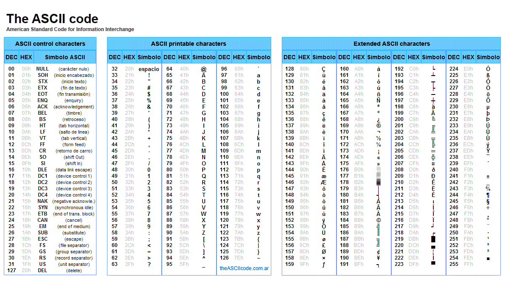

In het dagelijks leven rekenen wij met het tienstelsel, dit is een stelsel waarbij we de cijfers van 0 tot 9 gebruiken. Computers werken niet op deze manier, maar met het binair stelsel. Het binair stelsel kent slechts 2 symbolen, namelijk 0 en 1. Het lijkt misschien beperkt, maar voor digitale systemen is het juist ideaal, omdat het eenvoudig en betrouwbaar is voor elektronische schakelingen.
Het binair stelsel is een manier om informatie te weergeven met alleen de cijfers 0 en 1. Het is een hele handige manier, omdat elk bit (cijfer) een elektrische toestand in een computer kan aangeven: aan of uit. In het binair stelsel heeft elke bit een positie, deze positie bepaalt de waarde van het bit.
Het binair stelsel maakt gebruik van machten van 2, elke bit wordt vermenigvuldigd met een macht van 2, die overeenkomt met de positie van het bit. Het meest rechtse cijfer is 2⁰ = 1, het volgende cijfer is 2¹ = 2, dan 2² = 4, etc. Daarna worden alle waarden bij elkaar opgeteld. Op deze manier wordt een binair getal vertaald naar een decimaal getal dat wij begrijpen.
Computers werken met elektrische signalen, die slechts twee standen hebben: aan of uit. De waarde 1 staat voor “aan” (stroom loopt) en de waarde 0 staat voor “uit” (geen stroom). Hierdoor is het binair stelsel betrouwbaar, foutloos en snel. Het binair stelsel vormt de basis voor alle digitale apparaten. Zonder dit systeem zou het opslaan, verwerken en verzenden van gegevens veel ingewikkelder en trager zijn.
De kleinste eenheid in het binaire stelsel is een bit, de waarde is dan slechts 0 of 1. Acht bits vormen samen een byte. Met een byte kun je 2⁸ = 256 verschillende waarden opslaan, van 0 tot en met 255. Grote hoeveelheden informatie kunnen worden uitgedrukt in kilobytes (KB), megabytes (MB), enzovoort.
ASCII is een tabel waarin elke letter, cijfer en symbool een nummer krijgt. De computer slaat dat nummer op in binaire vorm (nullen en enen). Elk teken krijgt hierdoor een uniek teken. De computer slaat dit nummer op in binaire vorm, zodat de tekst kan worden verwerkt. Een voorbeeld: de letter A heeft de ASCII-code 65, wat in binair 01000001 wordt. De originele ASCII-tabel bevat 128 tekens. Dankzij ASCII kan de computer binaire data omzetten naar een tekst die wij kunnen lezen.
Het binair getal 1011 betekent:
1 keer 2³ = 8
0 keer 2² = 0
1 keer 2¹ = 2
1 keer 2⁰ = 1
Dit tel je bij elkaar op: 8 + 0 + 2 + 1 = 11 in ons gewone stelsel.